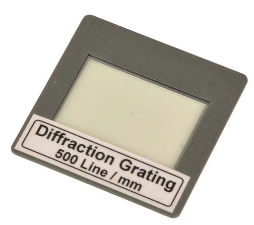

Diffraction grating
Diffraction grating
- is a piece of optical equipment that also creates a diffraction pattern when it diffracts: 1) Monochromatic light into bright and dark fringes; 2) White light into its different wavelength components.
